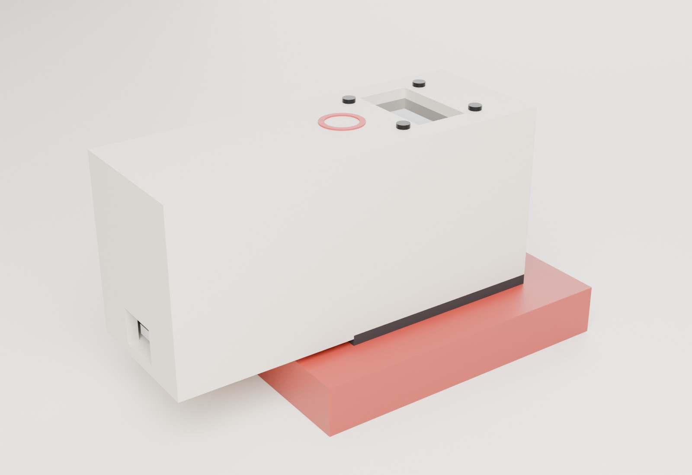
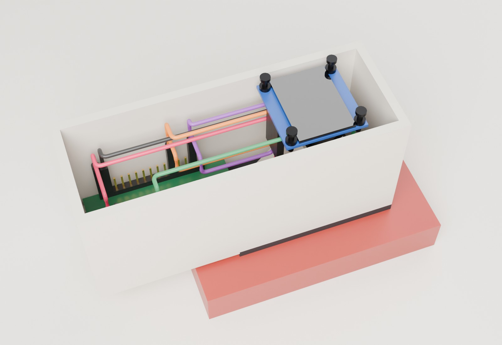
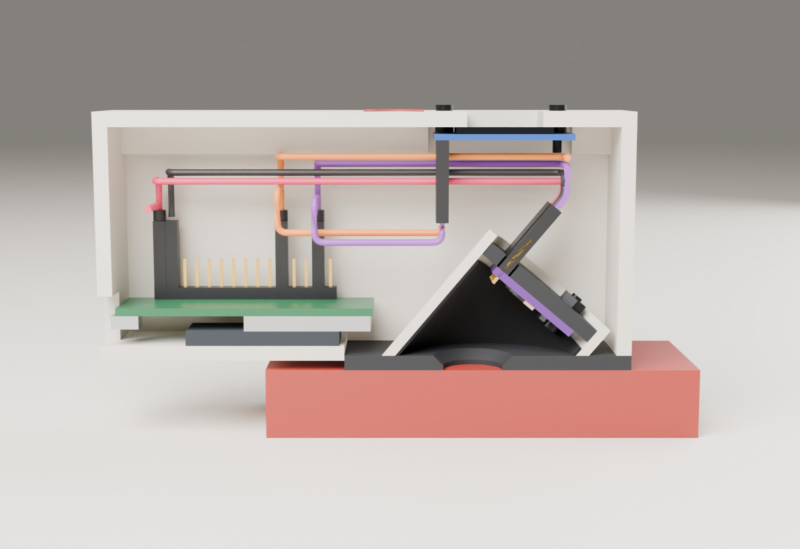
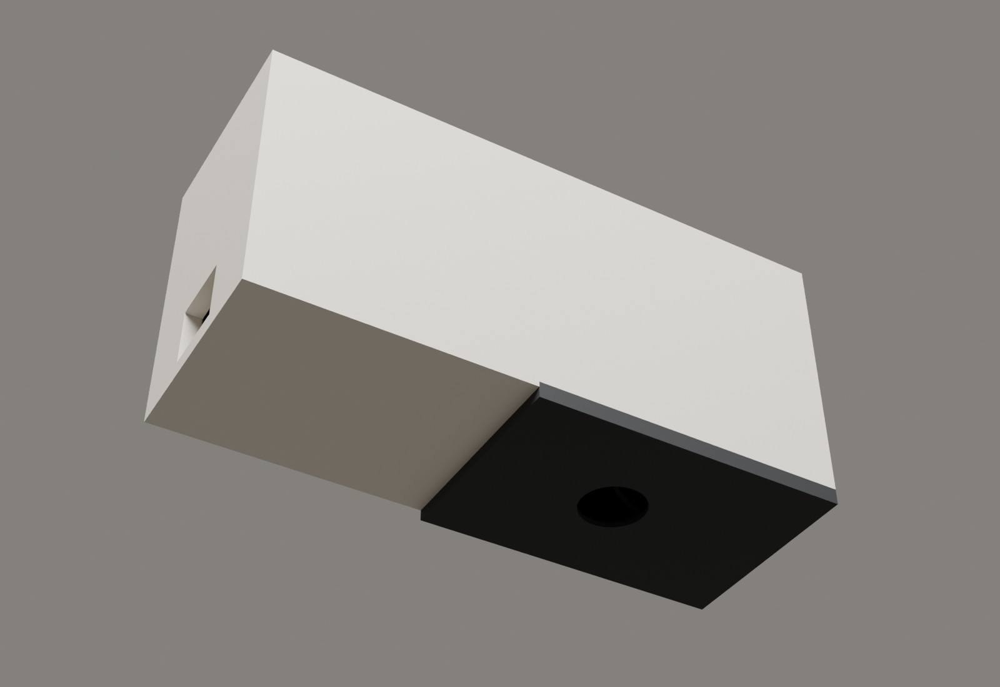

1. Dua pilihan
Jepit: daging dimasukkan

Kotak berengsel. Daging diiris 10 mm, diletakkan di atas busa, lalu kepala ditutup dan dikunci. Busa menekan daging rata ke muka tutup cat semprot, tempat sensor membaca dari sudut 40°.
- Ukuran 86 x 86 x 106 mm, berat sekitar 160 sampai 310 g
- Jarak, tekanan, dan gelapnya ruang ukur sama setiap kali
- Daging harus dipotong rata 10 mm
Genggam: alat ditempel ke daging

Kotak ramping. Pelat muka hitam ditempel ke daging utuh dan ditekan ringan dengan ibu jari di tanda merah. Sensor di dalam pipa PVC 1 inci yang ujungnya dipotong miring 40°.
- Ukuran 108 x 39 x 52 mm, berat sekitar 65 sampai 120 g
- Tidak perlu memotong daging, bisa dibawa ke pasar atau toko
- Hasil bisa sedikit berubah menurut cara orang menekan
2. Model 3D
Seret untuk memutar, roda mouse untuk zoom. Coba Potong: tengah (Y) untuk melihat sensor di dalam, dan Urai untuk memisahkan bagian. Di ponsel, tampilan lebih nyaman dalam posisi mendatar.
3. Gambar render
Desain E


Desain A versi PVC



4. Perbandingan
| Hal | Desain E (Jepit) | Desain A versi PVC (Genggam) |
|---|---|---|
| Cara pakai | Iris daging 10 mm, masukkan, tutup, kunci | Tempel ke daging, tekan ringan |
| Tekanan ke daging | Selalu sama (busa dan kait) | Bergantung tangan; firmware hanya menyimpan bacaan yang stabil |
| Cahaya luar | Tertutup rapat oleh kotak | Ditutup daging dan pelat muka; firmware menolak bacaan bila masih ada cahaya masuk |
| Kilap daging basah | Jatuh 3,2 mm di luar lubang ukur | Jatuh 5,1 mm di luar lubang ukur |
| Jarak sensor ke daging | 15,5 mm | 17 mm |
| Ukuran dan berat | 86 x 86 x 106 mm, 160 sampai 310 g | 108 x 39 x 52 mm, 65 sampai 120 g |
| Bahan khusus | Tutup cat semprot, busa, engsel, kait | Pipa PVC 1 inci (sepotong 5 cm) |
| Kesulitan merakit | Sedang: 15 jenis potongan, dudukan miring, engsel | Lebih mudah: 7 lembar dipotong lurus, ditambah 1 cakram kecil Ø 27,7 yang dijiplak dari ujung pipa lalu diamplas; papan dipasang tegak lurus di pipa |
| Paling cocok untuk | Mengumpulkan data penelitian yang rapi | Mengukur di lapangan, daging utuh |
| Keyakinan Lyra hasilnya stabil (simpangan R/G 0,03 atau kurang) | sekitar 75 % | sekitar 60 % |
Angka optik dari hitungan geometri, bukan pengukuran. Keyakinan adalah perkiraan Lyra dan baru bisa dipastikan dengan uji ulangan pada daging.
5. Apa yang diubah dari desain A pertama
| Desain A pertama | Versi PVC | Alasan |
|---|---|---|
| Badan dan tabung gelap dicetak 3D | 7 lembar PVC 3 mm dipotong lurus, tabung dari pipa PVC 1 inci yang sudah bulat | Tidak ada printer 3D |
| Sensor menghadap lurus ke bawah | Ujung pipa dipotong miring 40°, papan tegak lurus di dalam pipa | Pada sensor yang lurus, kilap daging basah memantul langsung ke chip dan membuat warna pucat |
| Ujung tabung kecil yang ditempel | Pelat muka hitam 58 x 39 mm, bagian belakang naik 2 mm | Bidang tempel lebar membuat alat duduk rata dan menahan cahaya |
| Lubang lurus | Lubang Ø 12, sisi dalam dikikir miring sampai Ø 16 | Tepi lubang tidak menghalangi pandangan miring (terhalang 2 %, sebelumnya 7 %) |
| Rusuk penyangga cetak | Busa dobel tape dan cakram dudukan dari PVC | Bisa dibuat dengan gunting dan lem |
| Tombol di papan | Mengukur otomatis saat ruang ukur gelap dan bacaan stabil; tanda merah tempat ibu jari | Tangan tidak perlu menekan dua hal sekaligus |
6. Beri pilihanmu
Pilihan dikirim sebagai pesan ke tim, tidak disimpan di halaman ini.
Rancangan lengkap desain E (gambar kerja, ukuran setiap lembar PVC, jalur kabel, langkah merakit): penjepit.html. Sumber ukuran semua model: desain/jepit/geometri.py dan desain/genggam/geometri_a.py.